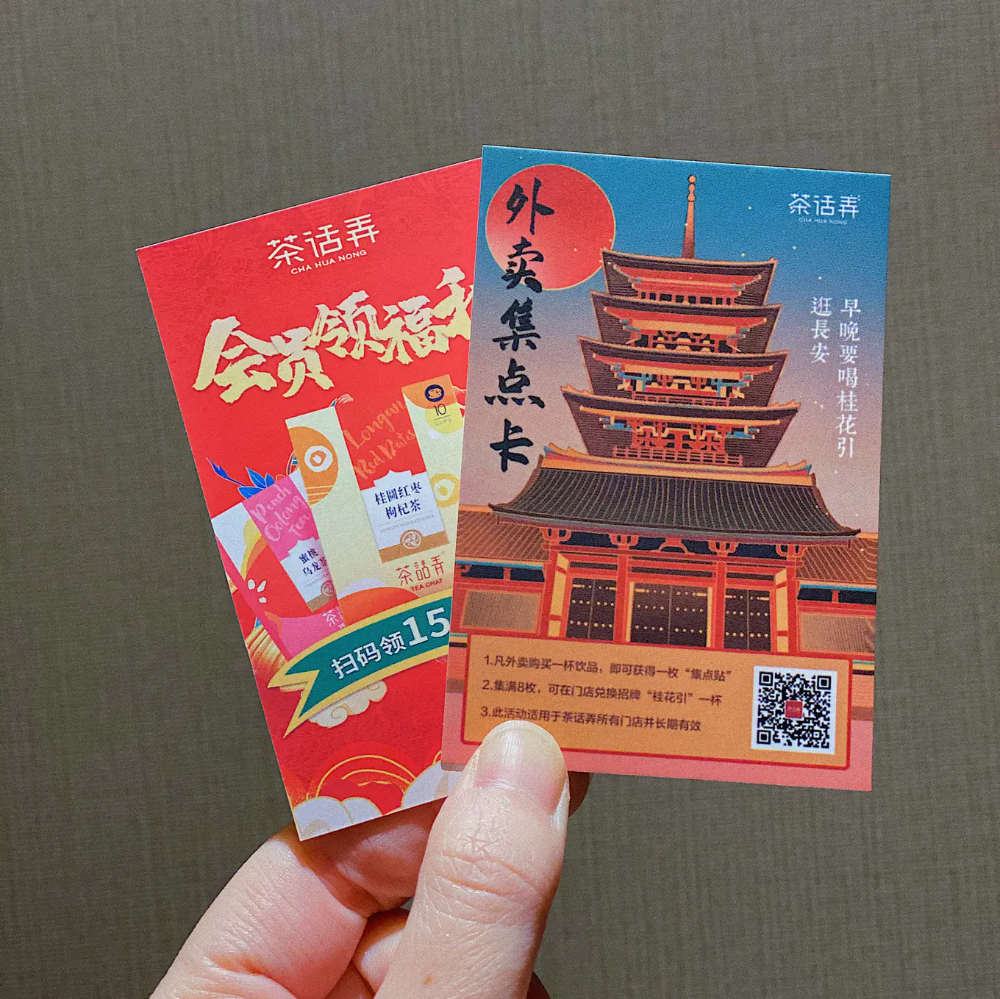
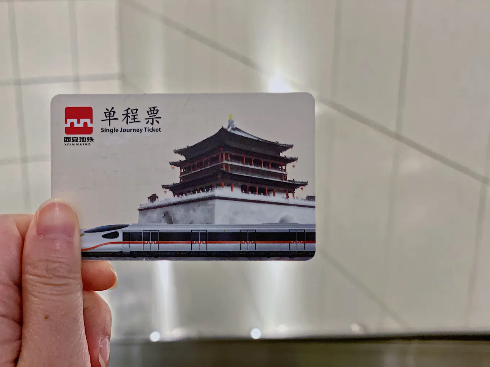

【2021/3】西安之旅2
Day1 钟楼
这是一场说走就走的西安之旅！😉

-->西安
下了飞机后，乘机场巴士🚌去市中心。
线路是「航站楼->钟楼饭店」，需身份证实名购票，25元/张。
爱骅裤带面馆
西安行的第一餐选了这家离酒店很近的面馆。
「油泼面」是宽面，「臊子面」是细面，同样是面但口感和口味都截然不同。
第一次喝到面汤，作为免费的餐前饮品，每桌还有免费的大蒜头🧄，真是大开眼界了！😂
免费的-->「面汤」还有超好喝的「冰峰」
「油泼面」

「臊子面」
「素拼」
冶咖啡☕️
墙裂推荐的一家咖啡店。👍🏻
位于一条在施工的小路里，如果不是网上推荐还真会错过。
抛开其网红店的身份，他家咖啡口味真的很不错。
「澳白」，豆子很醇香，拉花也漂亮。
「晚秋」，是秋季special drink，里面加了西安特色的稠酒，顶部还撒了桂花。稠酒有点类似酒酿的口感，加入咖啡之后，两者相得益彰，再配上桂花香气，真的绝了！！！这杯特饮我要给💯分！！！
西安饭庄(大唐不夜城店)
大唐不夜城附近随便找的一家饭店，陕菜的口味有点欣赏不来~😓
「香椿拌酿皮」
「招牌葫芦鸡」
「饭庄招聘豆腐」
「辣子蒜羊血」
大唐不夜城
「大唐不夜城」是位于雁塔区大雁塔脚下的一条步行街，以盛唐文化为背景，为游客重现了千年以前大唐盛世的美好景象，是西安唐文化展示和体验的首选之地。
大唐不夜城
从大唐不夜城步行一会儿就能到。
「大唐芙蓉园」是在原唐代芙蓉园遗址以北，仿照唐代皇家园林式样重新建造的，是中国第一个全方位展示盛唐风貌的大型皇家园林式文化主题公园。
华山一共5个峰，不是每一段都有索道坐的，有些路必须靠腿，所以能量高的干粮得背点，水可以带一些，喝完沿途可以买。
茶话弄
看很多人评价号称西安版的茶颜悦色。
是在酒店点的外卖。
点的「初心乌龙」就是乌龙茶底+奶沫，非常纯粹的味道，挺好喝的。
来西安的朋友可以尝试一下。

Day2 西安
早餐是酒店附近的「秦豫肉夹馍」，买了一个优质的一个普通的，其实也吃不出太大区别。感觉这个馍还不错，总体来说和上海吃到的也差大不多吧~
秦始皇帝陵博物院
来西安怎么能不参观一下兵马俑？！
作为世界八大奇迹之一的兵马俑的确非常壮观！
仿佛某皇的大型手办收藏现场。😂
一些小Tips：
提前一天在官方公众号上买票预约，门票🎫120元/张。
参观最好请一个讲解员，门口有许多野生讲解，我们是在园内请的，120+元/次，全程大概一个多小时，非常涨知识，不虚此行！
参观完出来会经过一条美食街，入口就是下图这个标志。
可以吃个午饭。美食街还有卖石榴汁，特别便宜，15元/2瓶，炒鸡甜der！
「羊肉泡馍」
洒金桥美食街
「洒金桥」和回民街一样，也是一条美食街，相比之下，洒金桥更加市井烟火气一些。乘坐地铁🚇到洒金桥站即可到达。

鲜榨石榴汁
手工烤馍
胡辣汤
从洒金桥走走逛逛可以一直走到回民街
西安鼓楼
建于明太祖朱元璋洪武十三年（1380年），是中国古代遗留下来众多鼓楼中形制最大、保存最完整鼓楼之一。因楼上原有巨鼓一面，每日击鼓报时，故称「鼓楼」。
西安钟楼
建于明太祖洪武十七年（1384年），初建于今广济街口，与鼓楼相对，明神宗万历十年（1582年）整体迁移于今址。是中国现存钟楼中形制最大、保存最完整的一座。

观景Tips：
在钟楼附近的开元商城5F有一个观景平台，是欣赏钟楼的绝佳地点！
晚上的钟楼比白天美很多，推荐大家晚上来这里观赏钟楼夜景哦！😉

晚上去吃了冰煮羊肉火锅🍲。
Day3 西安—上海
崇辉澄城水盆羊肉
看了「长安十二时辰」之后一直对张小敬赞不绝口的那碗水盆羊肉印象深刻。在西安的最后一顿一定要来吃一次！
所谓的「水盆羊肉」原来就是羊肉粉丝汤啊哈哈哈哈，配个「月牙饼」可以自制一碗羊肉泡馍了~😂
味道很不错